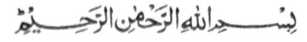
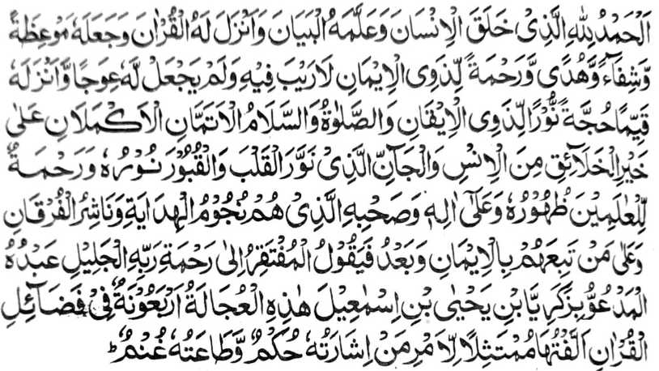
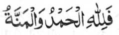
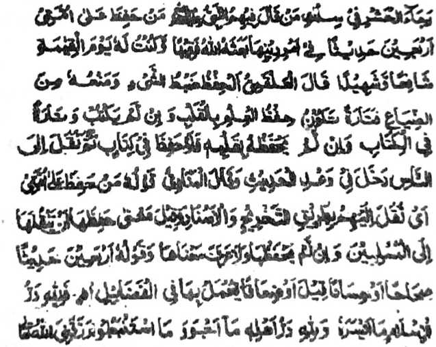
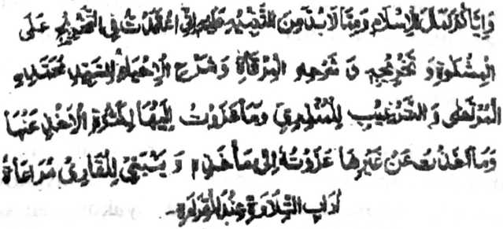
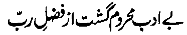
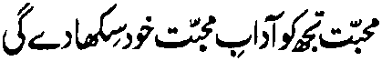
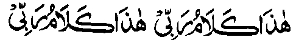

Sa Ingaran o Allah
Lebi a Masalinggagao, Lebi a Makalimo-on
PAMKASAN

So langon o podi na rek o Allah, a Miyaden ko manosiya go ininda-o Niyan non so sabot go initoron Niyan non so Qur'an, a thoma ago bolong, go toro-an ago limo ko manga tao a aden a paratiyaya niyan, go da-a sangka-an o madadalemon ago da-a inaden Iyan non a bekhog. Go initoron Niyan sekaniyan (a Qur'an) a mathitho, go da-owa go sindao a bagi-an o manga tao a aden a Yaqin niyan. So sanang a maliwanag ago so tarotop a kapipiya ginawa na baden mambagi-an o makalelebi ko manga ka-aden a manga manosiya ago so manga Jinn, a sekaniyan so kiyasindawan o sindao niyan so manga poso ago so qobor go limo si-i ko langowan o ka-aden, na rakhes o manga mbawata-an niyan go so manga bolayoka iyan a siran so manga pamito-onen ko toro-an go miyakalangkap ko padoman (Qur’an), na rakhes o manga tao a miyokit ko okit iran ko paratiyaya.
So oriyan niyan: Na pitharo o sekaniyan a makazisinganin ko limo o Kadenan iyan a Maporo, a oripen iyan a Zacariyyah a wata a mama o Yahya a wata a mama o Ismael a giyangka-iya a piyagaloka-lokan a daptar a pat-polo a Hadith a makapantag ko kalbihan o Qur’an na onot aken ko pando-an o sakatao [a manosiya] a so insarat iyan a babaloin aken a kokoman go so kaphagonoti ko ron na aya raken lebi a mapiya.
Isa ko manga miyatindos a limo o Allah a minitoron ko maporo a Madrasah a Mazahir-ul-Ulom, Saharanpur, na so gi-i kathimo-timo sa maka-isa ko oman ragon a ya antap na so gi-i kapanothola ko gi-i maperarad angka-iya a Madrasah. Sangka-iya a kalilimod a pekhilemba sangka-iya Madrasah, na kena ba aya mala a galebekon na so katimo-a ko manga papasangi kapangosiyat ago so manga lomiyangkap so ingaran iran sa India, ka aya mala a awida akal ro-o na so kabantowi ko langon o manga tao a mipepeno ko manga poso iran so babaya ko Allah ago so manga Mashaikh (manga Auliya) a aya tiyaralebi ran na so kapaginetao sa masolen. Minsan pen malo mikhorang so betad iyan ko masa a so Hujjatul Islam (Gerar a ipapatogina ko tao a maporo-i kata-o ko Islam) Maulana Mohammad Qasim Nanautwi Saheb (Rahmatullahi ‘Alaihi) ago so Qutbul Irshad (ilano a ma-ana mala-a Olama) Hadhrat Maulana Rashid Ahmad Gangohi Saheb (Lindawan o Allah so Qobor iyan) na lalayon siran pendarepa sangka-iya a kalilimod na pekhasindawan iran so manga poso o langon o makamamasa, go dapen marending ko pangilay-layan so masa a so kiyababadan kiran a manga tao a miyoyag ko Islam (lagid o) - Hadhrat Shaikh-ul-Hind (Rahmatullahi ‘Alaihi), Hadhrat Shah Abdur Rahim (Rahmatullahi ‘Alaihi), Hadhrat Maulana Khalil Ahmad Saheb (Rahmatullahi ‘Alaihi), ago so Hadhrat Maulana Ashraf Ali Thanwi (Lindawan o Allah so Qobor iyan) a lalayon siran pendarepa sangka-iya oman ragon a kapelimo-limod angka-iya Madrasah. So kapakamamasa iran na bowalan ko kawiyago-yag go sindao ko ma-atay a manga niyawa ago pephakabolong sa kawaw ko manga tao a gi-i mbabanog sa kababaya-i ron o Allah.
Sa masa imanto na, minsan pen so oman ragon a kapelimo-limod na miyapapason so sindao o siran a kiya-nggolalanan o toro-an, ogaid na so kiyababadan kiran na pendarepa sangka-iya kalilimod na sabap kiran na pekhasaboyagan sa manga pipiya ago limo so langon o makamamasa. So manga tao a miyakadarepa imanto a ragon na aya den mala-a saksi. So bo so manga tao a bigan sa kailay (a poso i) pephaka-ilay sangka-iya a sindao. Apiya so lagid tano a da-a rek iyan sangkanan a kailay na aden pen a pekhagedam tano a di tano kalalayaman.
Si-i sangka-iya oman ragon a kapelimolimod sangka-iya Madrasah, na opama ka so tao na aya antap iyan na so kapamakineg sa pipharasan a manga katharo o di na tanto a masakit a osiyat, na masiken a di sekaniyan makambalingan a mapipiya ginawa niyan a ba niyan malagid so tao a aya antap iyan non na so kapaka-kowa niyan sa bolong ko poso iyan a zasakit.

Na so langon o podi go so manga pangeni na bagi-an o Allah
Sabap si-i, na sangka-iya ragon ko ika 27 ko Zulqa’dah (ika sapolo a go isa a olan-olan o Taqwim o Islam), ika 1348 Hijri, na so Hadhrat Shah Hafiz Mohammad Yasin Naginwi (Rahmatullahi ‘Alaihi) na komiya-ip sa Madrasah. So kiyapaka-talingoma niyan na miyaka-ibarat sa miyoran a limo ago gagao, go di aken khatarotopan so panalamat aken non sabap si-i. Oriyan o kiyatokawi ko sa isa sekaniyan a nao-nao o Hadrat Gangohi (Rahmatullahi ‘Alaihi), na di den kailangan so ka-aloya ko kapiya niyan-i sipat ko paratiyaya ago so kambilangatao, ago so kapakamamasa o manga sindao (o paratiyaya) niyan. So kiyapasad angkoto a kalilimod na mimbalingan sekaniyan na biyantog ako niyan sa kinipakawit niyan raken angkoto a isa a sorat a piyangeni niyan raken a domaptar ako sa pat-polo a Hadith makapantag ko kalbihan o kabatiya sa Qur’an na oriyan niyan na ipakawit aken non a rakhes o ma-ana niyan. itatakan niyan pen sangkoto a sorat iyan a odi aken noto nggalebeka angkoto a kabaya iyan na pephanonen niyan ko miyakasambi ko goro aken ago bapa aken, Maulana Hafiz Al-Haj Maulvi Mohammad ilyas (Rahmatullahi ‘Alaihi), a balowin niyan angkoto a pangeni niyan a ped a sogo-an niyan. Tiyangked iyan so kabaya iyan sa kanggalebeka ko saya. Kiyapantagan, a aya kinisampay raken angka-iya kababantogan a sorat na da-a ako sa walay ka zisi-i ako sa lakawan na giyangkoto a bapa aken na zisi-i sa Saharanpur. Si-i ko kiyapaka mbalingan aken, na inibegay raken angkoto a bapa aken so sorat a rakhes o sogo-an niyan sa kinggolalanen aken sangkoto a galebek. Sa daden a khadalinan aken sa diyaken non kinggolalanen o di na ba ko mapangeni a diyaken khagaga. Makimpen khapakay a midalin aken so mipapasang a galebek aken ko (kipezoraten aken ko) osayan o Mo'atta (isa a kitab a kasosoratan ko manga Hadith) o imam Malik (Rahmatullahi ‘Alaihi), na miyata-alik aken angkoto a galebek aken sa pira gawi-i sa, sabap ko onot aken sangkoto a penggaga-anan a pangeni ago sogo-an, na pinggalebek aken (angka-iya sogo-an) sabap ko onot aken rekaniyan. Phamangeni naken a ma-ap so di aken kapaka-tatarotop na diden khapalagoyan sabap ko kada raken o kaphakagaga.


Pinggalebek aken na-i a inam sa kawiyag pharoman ko Gawi-i a Qiyamah, a ped ko manga tao a inaloy o Rasulollah (Sallallaho ‘Alaihi Wasallam) ko kiyatharo-a niyan, “Saden sa somiyap pantag ko Ummat aken sa pat-polo a Hadith pantag ko manga sogo-an ko Agama iran na oyagen sekaniyan o Allah ko Gawi-i a Kaphangokom a Faqih (‘Alim) go khabaloy ako ko Gawi-i a Qiyamat a zapa-at rekaniyan ago saksi iyan.” So Alqami (Rahmatullahi ‘Alaihi) na pitharo iyan a so katharo a “somiyap” sangka-iya Hadith na makapemama-ana sa kaparihala-a ago kapagipata on ka oba madadas, a nggolalan sa kilangagen non apiya da soraten o di na so kisoraten non sa karatas, apiya da milangag. Giyoto-i saden sa tao a isorat iyan siran (a manga Hadith) a ropa-an a kitab ago iyalat iyan ko manga ped iyan na miyaped pen sangkoto a balas a miya-aloy sangka-iya Hadith.
So Munavi (Rahmatullahi ‘Alaihi) na si-i zosoramig so pamikiran niyan sa so katharo a “so somiyap pantag ko manga Ummat aken” na aya ma-ana niyan na so kapanothola ko Hadith a rakhes o kiyathitayanan niyan. So peman so saba-ad na aya panarima iran sangkoto a “somiyap” na ped ro-o pen so manga tao a pephanotholen niran angkoto (a Hadith) ko manga ped a Muslim apiya da iran milangag o di na apiya di ran katawan so manga ma-ana niyan. Sakamaoto mambo a giyangkoto a katharo a “pat-polo a manga Hadith” na inosar sa diyamong a ma-ana, ma-ana giyangka-iya a manga Hadith na khapakay a Sahih (Mabager), o di na Hasan (Mapiya) o di na da-if (da-a bager iyan) asar ka khapakay so kinggolalanen non sabap ko manga balas iyan.
“Allaho Akbar!”[So Allah na lebi a Mala] Madakel den a kamapiya-an a ibebegay o Islam. Go tanto a mapiya sa sangan o manga Olama a tanto miromasay ko kaosaya iran ko kadalem o madakel ago mbaram-barang a katharo. ikalimo tano o Allah langon sa katarotopa tano ko Islam.
Mala-i gona a thanodan a igira aden a inaloy aken a Hadith a da ko ron matago so ngaran o kitab a kiyakowa-an aken non, na aya kamamata-ani ron na aya kiyakowa-an aken non na isa sangka-iya lima a manga kitab: ma-ana so "Al-Mishkat", so "Tanqih-ur Rewat”, so “Al-Mirqat”, so “Sharh-ul-ihya-ul-Ulum ago so “At-Targhib” (a inidaptar) o Mundhir, a aya ko siyarigan ago pho-on kiran so kala-an o piyangaloy aken. igira aden a inaloy aken a pho-on sa salakao a kitab, na isosorat aken non so kiya-poonan niyan.
Paliyogat ko pembatiya sa Qur’an so kaokiti niyan ko manga sarat a pada-adat ko kapembatiya-a on.
Si-i ko da tano pen kibolog, na ba-anda taralebi so ka-aloya ko saba-ad a manga sarat a pada-adat o pembatiya sangka-iya soti a Qur’an; sabap sa tiyarima (o manga tao) a

“So tao a da-a adat iyan na miyapapas sekaniyan ko matitindos a limo o Allah.”
So kakampet iyan, na aya ma-ana o langon o okit a pada-adat na so katarima-a sa so sesela-an a Katharo o Allah, na katharo o Sekaniyan a Pezimba-an tano, ago sekaniyan (a Qur’an) na katharo o Sekaniyan a Pekhababaya-an tano ago gi-i tano Mbabanogen (so kasoso-at Iyan).
So langon o tao a somiyagad sa kababaya, na katawan niran so kala a babaya ko sorat o di na katharo o tao a pekhababaya-an niyan. So kapipiya ginawa a khagedam o tao sabap ko gi-i niyan kapaki mbitiyara-i (ko pekhababaya-an niyan) na ka-oombawan niyan so langon o bitikan ko pada-adat sabap sa miya-aloy:

“Soden so kababaya i magendao ko tao ko manga bitikan o kapaga-adat.”
Sabap ro-o na si-i ko kapembatiya-a ko Qur’an, na opama batano den pagilaya so tanto a kapiya-i paras ago so kada-a taman o limo o pekhababaya-an tano a Allah, na so manga poso tano na khagawi o kasasagad reketano o babaya a soti. Sareta iyan, na so Qur’an na aya katharo o Dato o manga dato, ago sogoan o Diyon-diyongan o manga sultan. Kokoman a pimba-as o Samporna-i Ge-es a Datu, a tatap a da-a saginda Niyan sa dayon sa dayon. So langon o miyaka-khidmat si-i ko manga torogan omanga datu na katawan nirana-i sabap ko kiyasagadi ran non, na so peman so da si-i makasagad na ba iran den mipephagarangan so kitataralo o mamala ago kalek ko manga sogo-an o datu. So Qur’an na katharo o Pekhababayan a Allah, ago Sekaniyan pen i Lebi a Maporo a Datu. Sabap ro-o, na batiya-an tano so Qur’an sa padalemen tano (sa ginawa tano) so babaya ago mamala.
Miya-aloy a igira so Ikrimah (Radhiallaho ‘Anho)) na inokab iyan so Kitab ka mbatiya-an niyan, na pekhada-an sekaniyan sa tanod na pekha-othang. Oriyan niyan na gi-i niyan tharo-on:

“Giya-i so Katharo o Kadenan ko, giya-i so Katharo o Kadenan ko.”
Giyangka-iya a miyanga-aaloy na madadalemon so makampet a osayan ko manga sarat a pada-adat si-i ko kinisoraten non zempad o manga Olama ko manga Muslim. Khaomanan pen so osaya niyan sangka-iya a phakatondog si-i a pandangan. Aya kakampet iyan, na so Muslim na pangadi-i niyan so Kitab o Allah a kena ba sekaniyan talasogo-ay ka sekaniyan na oripen a tanto a thatapapay si-i ko Kadenan iyan, ago Datu iyan ago Lomilindingon. So manga Auliya na katharo iran a opama ka so tao na mapikir iyan so di niyan kapakatatarotop ko gi-i niyan kinggolalanen ko patot a pada-adat ago mamala ko masa a kapembatiya iyan sa Qur’an, na khatatap sekaniyan sa kapephakarani niyan ko Allah. So peman so tao a ipoporo iyan a ginawa niyan o di na takabor, na daden a isegan iyan.